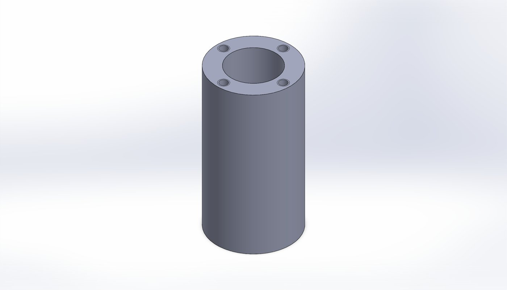
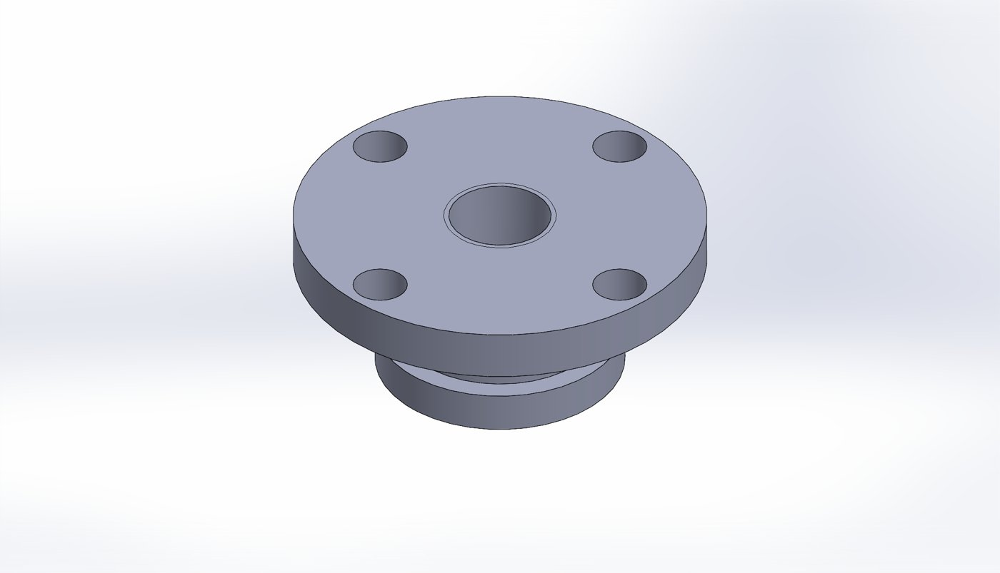
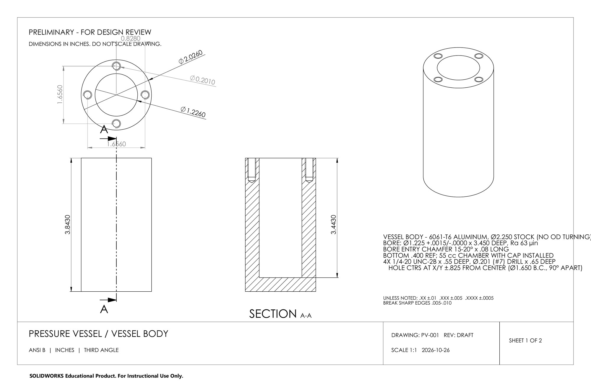
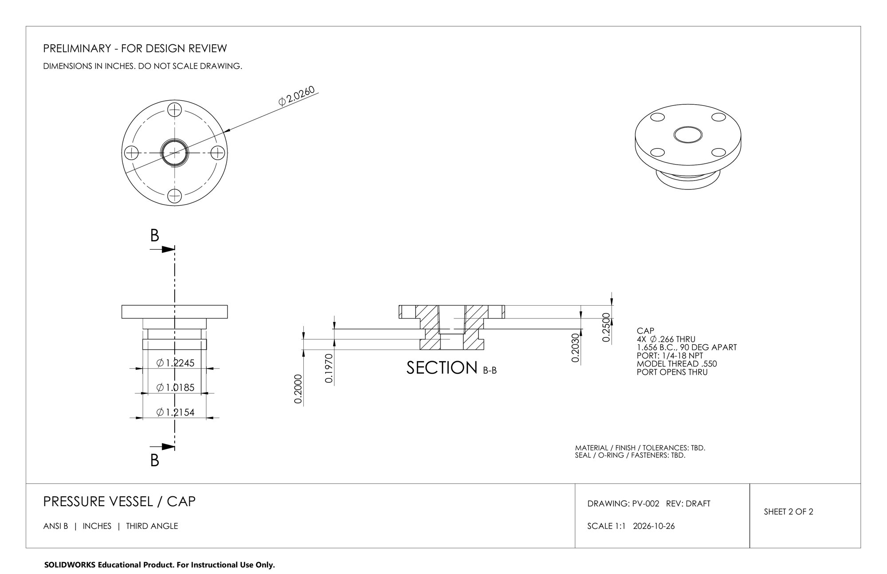
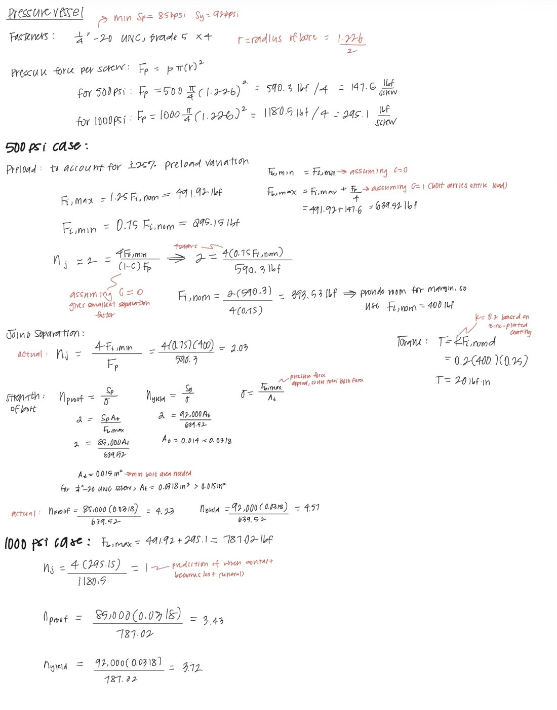

Lab Pressure Vessel
A machined 6061-T6 aluminum vessel that holds 55 cc of liquid at 500 psig and was designed to release at 1000 psig by blowing out its O-ring, with no valve and no metal failure. Team of three, $100 budget, sized from the Parker O-Ring Handbook and Shigley.


Seal at 500, let go at 1000
The brief: hold 50–60 cc of liquid at 500 psig with at least one working O-ring, use a threaded joint besides the fluid port, take a 1/4" NPT Swagelok fitting, and be easy to machine (no 304/316 stainless). The hard part was the last rule: at 1000 psig the vessel had to unseal and release the liquid on its own, with no relief valve and no metal failure.
We chose to make the O-ring the weak link. Pressure pushes the ring against the low-pressure side of its groove; if the gap there is big enough, the rubber squeezes into it, tears and lets the liquid out. Everything metal — wall, end wall, screws, threads — was sized to keep a large safety factor well past 1000 psig.
How it works
Radial O-Ring Gland
An AS568 2-214 Buna-N 70A ring sits in a Ø1.0185 groove on the cap spigot and seals against the Ø1.226 bore. Following the handbook's size table, compression stays 20.1–26.6% across all tolerances, stretch 2.1–4.8% (limit 6%) and groove fill under 79%. A first idea, a 1.250 bore, was dropped because it stretched the ring 7.2%.
Built-In Release Gap
The spigot has two lands. The chamber-side land is a close H8/f7 fit that keeps the ring centred. The land on the outside of the groove is turned smaller, to the measured bore minus .0106", the extrusion gap the Parker chart gives for a 70A ring at 1000 psi. At 500 psi the same ring would need about .017", so the working pressure sits near half the limit.
Body, Cap & Screws
Both parts are turned from one 2-1/4" 6061-T6 bar. The wall would not start to yield until about 12,000 psi, roughly 12× the release pressure. The cap is held by 1/4-20 Grade 5 screws at 20 lbf·in (400 lbf preload); proof-load safety factor stays above 3 at 1000 psi, and the tapped aluminum threads have a stripping factor of about 4.
Dimensioned parts


Key numbers
| Check | Value | Basis |
|---|---|---|
| Chamber volume | 55.0 cc (55.1 at max bore) | π/4 · 1.226² · 2.843 |
| O-ring compression | 24.1% nominal, 20.1–26.6% | Parker p.22, corrected for stretch thinning |
| O-ring stretch | 3.5% nominal, max 4.8% | Parker p.8 limit 6% |
| Release-side gap | .0106" diametral | Parker Fig. 4.10, 70A at 1000 psi |
| Load on cap | 590 lbf at 500 psi, 1,181 lbf at 1000 psi | p · π/4 · D² |
| Screw preload / torque | 400 lbf, 20 lbf·in | Joint separation factor ≈ 2 at 500 psi |
| Screw safety (1000 psi, 4 screws) | 3.40 proof / 3.68 yield | Shigley, C = 1 worst case |
| Wall yield pressure | ≈ 12,000 psi | Thick-wall Lamé, Tresca |
What happened
Late in the build we heard that groups with similar designs had not released at 1000 psi, so we weakened ours by running two screws instead of four, hoping the unsupported sides of the cap would flex. We also left both parts at the 2.25" stock diameter to save machining time. In testing the vessel held past 1000 psi with no leak and no damage — it met the pressure-holding and no-metal-failure goals, but did not release.
The likely cause is that the release-side gap was still too tight for the ring to extrude. Next time we would open that gap, add fillets at the groove bottom and at the land edge so the ring can roll out more easily, and assemble with the screws snug rather than torqued, since finger-tight testing came closer to the 1000 psi target. We would also add installing the NPT fitting to the assembly procedure.

- 6061 aluminum rod, Ø2-1/4" × 12" (8974K75) — $51.76
- Buna-N O-rings, -214, pack of 100 (9452K34) — $9.15
- 1/4-20 × 3/4" Grade 5 hex screws, pack of 100 (92865A540) — $14.34
- Total: $75.25 of the $100 budget
Team: Lily Zheng, Brady Gouin and Jack Johnston.